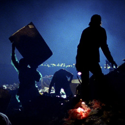

History
The iconic statue of Christ the Redeemer stands with his arms outstretched to the south. His back is turned to the north edge of Rio de Janeiro’s Guanabara Bay where the metropolitan landfill of Jardim Gramacho (“Gramacho Gardens”) was built.

- The site receives more trash every day than any landfill in the world.
- 7,000 tons of garbage arrive daily making up 70% of the trash produced by Rio de Janeiro and surrounding areas.
Established in 1970 as a sanitary waste facility, the landfill became home to an anarchic community of scavengers during the economic crises of the 70’s and 80’s. These catadores lived and worked in the garbage, collecting and selling scrap metal and recyclable materials.